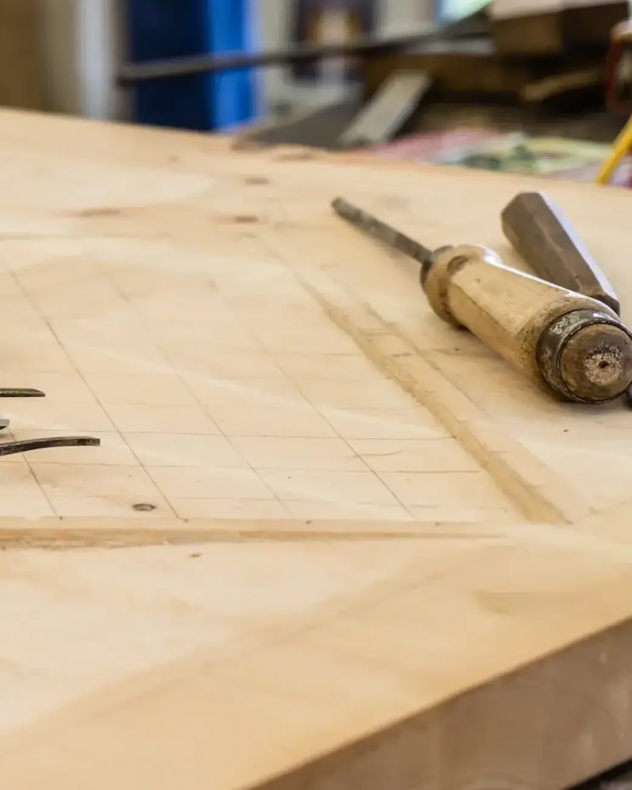
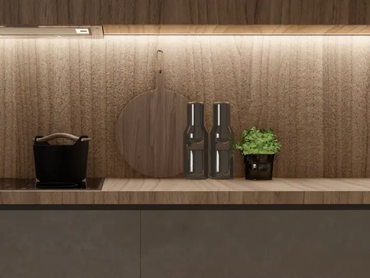
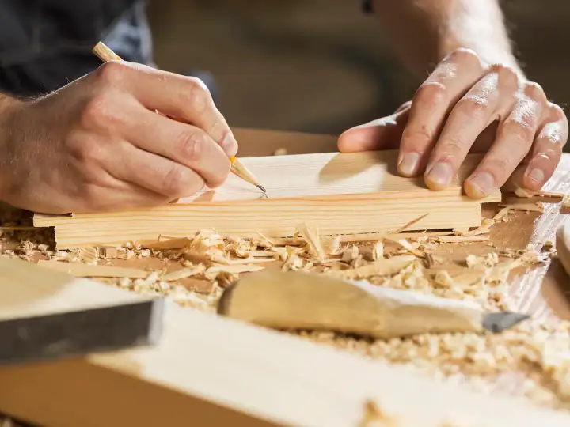
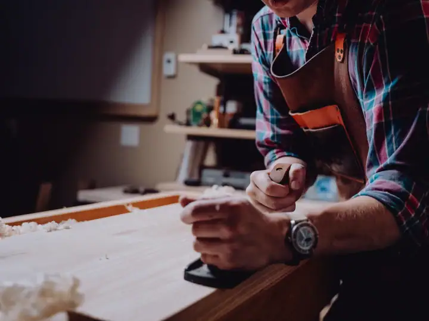
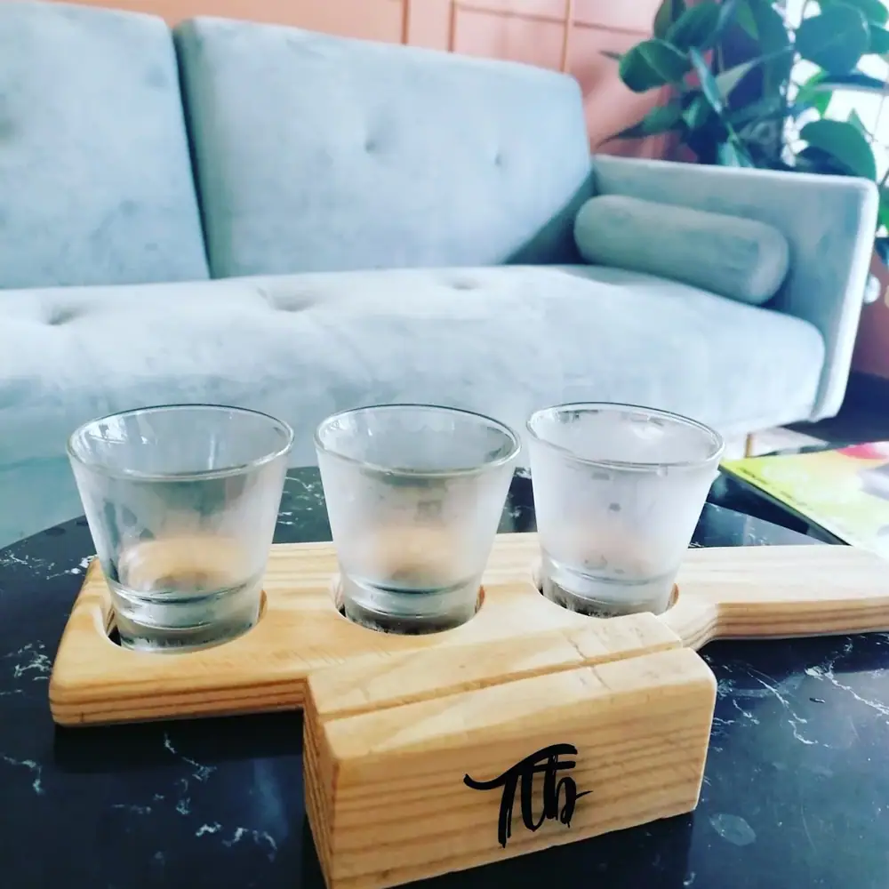
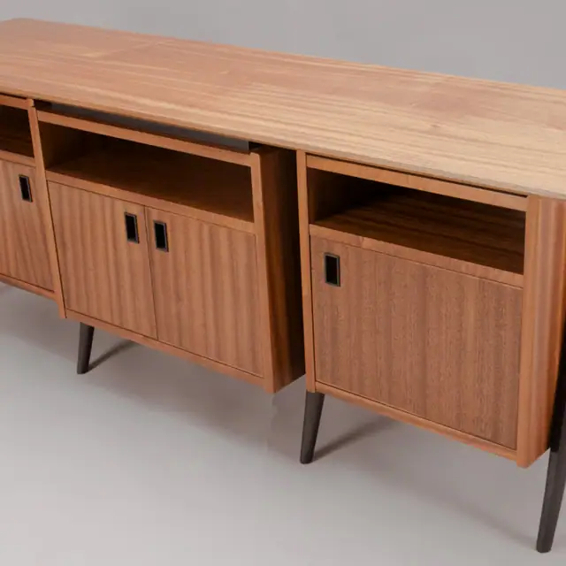
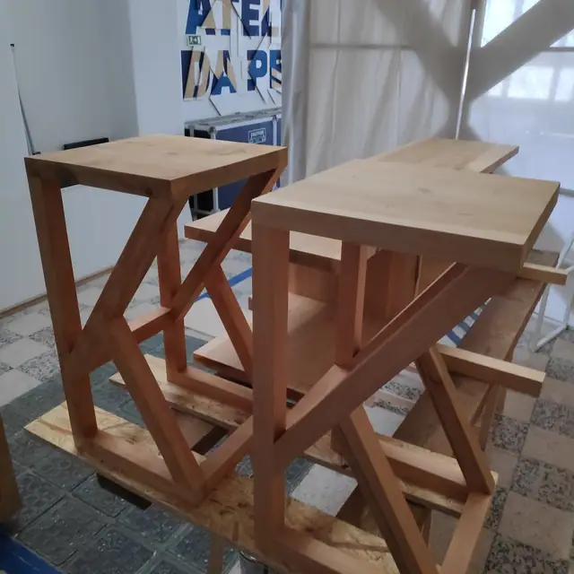
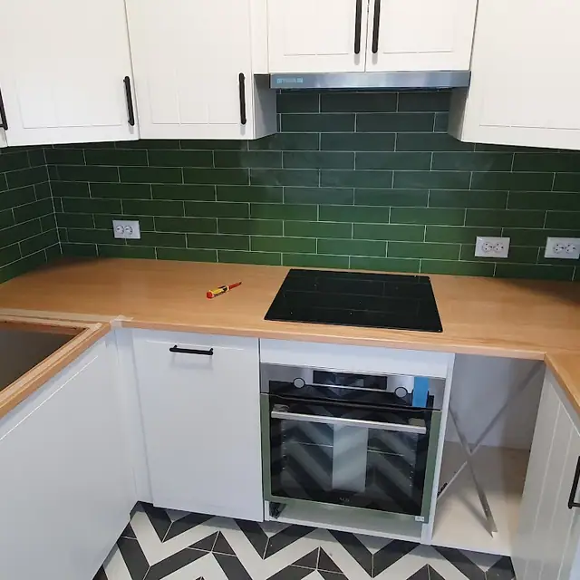
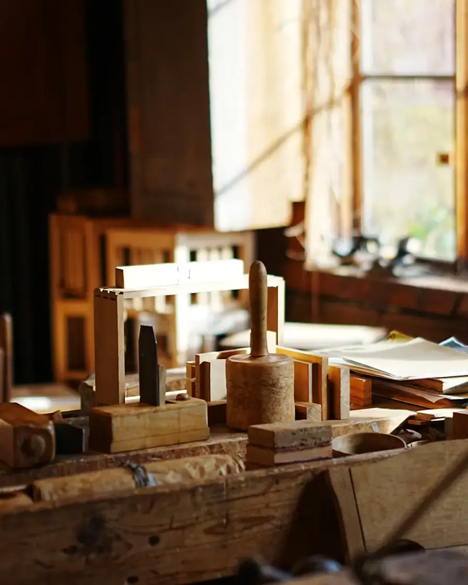

Mobiliário por medida · Lumiar, Lisboa
Três gerações a trabalhar a madeira.

Bancadas de cozinha, mesas, móveis de sala e escritório, feitos à mão e à medida em Lisboa. O Gonçalo acompanha cada peça desde o desenho até à entrega, com rigor e atenção ao pormenor.
- 5,0 ★★★★★
- 18 avaliações no Google
- À medida
- cada peça é única
- Oficina própria
- fabrico e montagem · Lisboa
O que fazemos
Cada centímetro da sua casa, aproveitado.
Escolha o trabalho e fale diretamente com a AFC Woodlab. A mensagem segue já escrita no WhatsApp: basta enviar as medidas ou uma fotografia.
-
I
Cozinhas por medida
Armários, ilhas e bancadas feitos à medida, com ferragens de qualidade e acabamentos escolhidos consigo.
Pedir orçamento
-
II
Mesas e peças únicas
Mesas, bancadas e peças de autor em madeira maciça, feitas à mão e pensadas para durar.
Pedir orçamento
-
III
Salas e estantes
Móveis de TV, estantes e painéis que deixam a sala elegante e sem fios à vista.
Pedir orçamento
-
IV
Escritório em casa
Secretárias, estantes e arrumação para trabalhar em casa com conforto.
Pedir orçamento
-
V
Portas, escadas e revestimentos
Portas, guardas de escada em ripado, lambrins e revestimentos de madeira por medida.
Pedir orçamento
Trabalhos entregues
Feito na oficina, montado em casa de clientes.
Fotos de projetos entregues pela AFC Woodlab.




Móvel bom é o que cabe no seu espaço e dura uma vida inteira.

A carpintaria
Peças sólidas, feitas para durar.
Há clientes que fugiram das bancadas de grandes marcas e encontraram aqui madeira maciça e acabamento cuidado. Nas avaliações, repetem-se a qualidade, a simpatia e o rigor.
- Cozinhas
- bancadas em madeira
- Peças únicas
- mesas e móveis
- Seg. a sex.
- das 9h às 17h
- Nota 5,0
- em 18 avaliações
Como funciona
Do desenho à montagem.
Vê o projeto antes de produzir e sabe o prazo de entrega desde o primeiro dia.
- I.
Envie mensagem
Conte o que quer fazer e envie fotografias ou medidas. A equipa marca a medição.
- II.
Desenho e orçamento
Recebe o desenho com os acabamentos e o orçamento detalhado antes de aprovar.
- III.
Produção e montagem
Tudo é fabricado na oficina, à medida, e montado pela equipa, com limpeza no fim.
Segunda a sexta: 09h–17h
Avaliações públicas
Quem encomenda, recomenda.
Avaliações reais de clientes publicadas no Google Maps.
Recorremos à AFC Woodlab para produzir a bancada da nossa cozinha. Sabíamos que não queríamos bancadas de marcas suecas de fraca qualidade e pouco resistentes. O resultado superou e muito as expectativas!
A AFC Woodlab destaca-se pelo seu profissionalismo, confiabilidade e excepcional habilidade artesanal. Com o respaldo de três gerações de marceneiros experientes, a empresa combina o conhecimento tradicional com uma abordagem moderna e precisa ao trabalho em madeira.
A AFC Woodlab faz mobiliário à medida e conforme as necessidades de cada um. Para além da simpatia do Gonçalo, dono da empresa, têm imensa atenção ao detalhe, ao rigor e em fazer tudo com extremo bom gosto! Estão de parabéns!
Cheguei com um design específico em mente e eles entregaram exatamente como eu imaginei. A atenção aos detalhes é excepcional — ficou perfeito no meu escritório em casa!
Encomendei uma mesa de centro e ficou melhor do que imaginei! Todo o atendimento foi 5 estrelas, muito atenciosos e profissionais!
Perguntas frequentes
As perguntas que todos os clientes fazem.
Não encontrou a sua? Envie pelo WhatsApp as medidas ou fotografias do espaço.
Onde fica a AFC Woodlab?
A AFC Woodlab fica em Estrada da Torre, 47A, 1750-062 Lisboa. No botão "Como chegar" desta página abre o percurso diretamente no Google Maps.
Qual é o horário da AFC Woodlab?
A AFC Woodlab atende segunda a sexta, das 09h às 17h. Encerra aos sábados e aos domingos. A marcação é feita pelo WhatsApp.
Como pedir um orçamento na AFC Woodlab?
Basta enviar mensagem pelo WhatsApp para o 918 673 619, no botão "Pedir orçamento". Envie pelo WhatsApp o que precisa, as medidas aproximadas ou fotografias. A equipa marca a medição e apresenta o desenho e o orçamento.
Que trabalhos a AFC Woodlab faz?
Cozinhas por medida, Mesas e peças únicas, Salas e estantes, Escritório em casa e portas, escadas e revestimentos. Cada peça é desenhada à medida do seu espaço depois da medição.
Quanto tempo demora uma cozinha por medida?
Depende da dimensão e dos materiais. O prazo é indicado junto com o orçamento, antes de aprovar.
Que madeiras usam?
Depende da peça e do orçamento: madeiras maciças como carvalho, nogueira ou pinho, e também lacados e folheados. A escolha é feita consigo no desenho.
Contacto
A oficina fica em Lisboa.
- Morada
- Estrada da Torre, 47A
1750-062 Lisboa · Lumiar - Horário
- Segunda a sexta09h às 17hSábado e domingoEncerrado
- Telemóvel
- 918 673 619
O móvel que imagina começa num desenho.
Peça o seu orçamento na AFC Woodlab pelo WhatsApp, sem compromisso.
Pedir orçamento